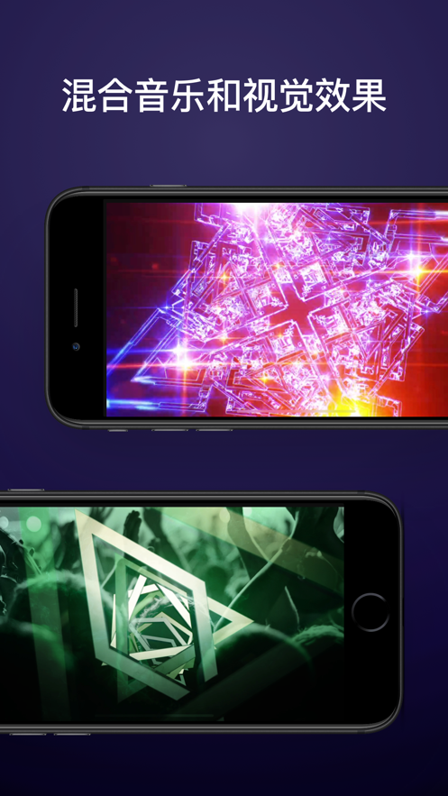
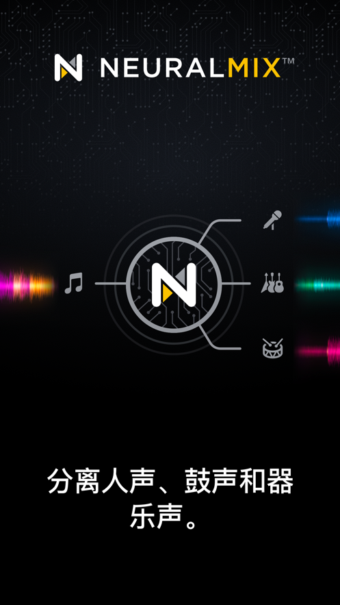

手机电脑都能打碟？djay 小白五分钟上手指南
第一次碰 DJ 软件也不怕——这篇从下载安装到第一次混音跑通，手把手带你体验 djay 把一首歌拆成人声和鼓点的神奇能力。
这篇能带你从完全不懂到用起来，不需要任何音乐基础，不需要买任何硬件。
它到底是干嘛的？一个生活化类比
你去朋友家开派对，有人放了一首好听的歌 A，接着又切了一首风格完全不同的歌 B——两首歌之间的"断档"让气氛瞬间冷了三秒。djay 要做的事情，就是把 A 的尾巴和 B 的开头无缝揉在一起，让音乐永远不停、节奏永远不乱。
说穿了它就是一个"音乐胶水"——而且是带 AI 的那种。你可以想象成把两首歌倒进一个搅拌机，它帮你自动对齐速度、对齐节拍，甚至可以把一首歌里的人声单独抽出来叠在另一首歌的鼓点上。
传统上这件事需要专门的 DJ 设备和几年练习，但 djay 把整个流程搬进了手机和电脑——去它的官网能看到这套思路的完整展示。免费版就能完成完整的手动混音，PRO 订阅还能解锁一个叫 Neural Mix 的 AI 核心能力——实时把任何一首歌拆成人声、鼓声、器乐三条独立轨道。

五分钟上手：从下载到第一次跑通
好，准备好你的手机或电脑，我们从零开始。
第一步：下载安装
djay下载页面整理了各平台入口——iPhone/iPad 去 App Store，Android 去 Google Play，Mac 去 Mac App Store，Windows 去 Microsoft Store。搜 "djay" 就能找到，图标是黑底白字的简约设计。安装包不大，几十 MB 的事。
第二步：登录账号（或跳过也行）
打开软件会提示你登录 Algoriddim 账户。不登录也能用免费版核心功能，但登录后 7 天 PRO 免费试用会自动解锁——相当于先玩一遍完整版再决定要不要订阅。放心，试用不需要绑信用卡，到期自动降回免费版，你创建的歌单和设置都保留。
第三步：加载第一首歌
djay 有两个转盘 Deck A 和 Deck B，左边 Deck 放歌，右边 Deck 准备下一首。点 Deck A 下面的"加载"按钮，你可以从三个地方选歌：
- 本地音乐库（电脑硬盘里的 mp3）
- Apple Music / Spotify / TIDAL（登录账号直接拉云端曲库）
- SoundCloud
选一首节奏明显的歌，比如一首电子乐或流行歌，点加载。
第四步：对齐节拍（Sync）
现在 Deck A 开始播放，波形在转盘上方滚动。接着给 Deck B 加载另一首歌。两首歌的 BPM（每分钟节拍数）可能不一样——这个数字在每个 Deck 的右上角显示。
手动对齐节拍需要长时间练习，但 djay 有自动 Sync 功能。点 Deck B 上的 Sync 按钮，软件会自动把 Deck B 的 BPM 和节拍起点对齐到 Deck A。你会看到 Deck B 的波形开始和 Deck A 同步滚动。
第五步：第一次过渡
现在歌 A 已经播了一分钟左右，准备让歌 B 接上来。慢慢把混音器中间的 Crossfader（推子）从最左边推到最右边——随着推子移动，歌 A 的音量逐渐减小，歌 B 的音量逐渐增大。整个过程大概 10 到 20 秒，推子到位时歌 A 就完全淡出了。
恭喜你——你刚刚完成了第一次手动混音。就这么五步，从头到尾不超过五分钟。

上手后先玩这三个功能
基础流程跑通了，别急着关软件。djay 最有意思的几个功能，免费版就能玩。
第一个：Neural Mix——一首歌拆成三份
这是 djay 最招牌的 AI 功能。订阅 PRO 后，打开任意一首歌，你会看到波形变成了彩色——人声是一种颜色、鼓声是另一种、器乐是第三种。每个 Deck 下方出现三个小滑块：Vocal（人声）、Drums（鼓和贝斯）、Music（器乐）。
你把 Vocal 滑块往下拉——人声消失了，只剩伴奏。把 Drums 拉到一半——鼓点变弱但还能听到。想象一下：你放着一首歌的伴奏，同时把另一首歌的人声抽出来叠上去——这就是现场做 remix 的感觉。
免费版虽然 Neural Mix 有部分限制，但 7 天试用期里可以完整体验。第一次试的时候你大概率会"哇"一声——这个实时拆歌的能力在手机上是 djay 独一份的。
第二个：Automix——让 AI 帮你打碟
派对上你不想全程手动操作怎么办？点一下 Automix 按钮，djay 自动接管：它会从你的歌单里按顺序选歌、对齐节拍、做过渡，从头到尾不用你碰一下。
免费版 Automix 的过渡效果有限，但足够应付朋友聚会。PRO 版解锁了全部过渡类型，包括 Neural Mix 智能过渡——AI 会在换歌时自动交换人声和鼓点的叠层，过渡比手动做的还丝滑。
第三个：Sequencer——现场叠一个 beat
打碟间隙想即兴加点花样？打开 Sequencer（音序器）面板，你会看到 8 行 16 拍的格子。每行是一种音色——Kick 底鼓、Snare 军鼓、Hi-Hat 踩镲、Clap 拍手声。你在格子上点来点去，画出一个节奏型，点 Play 就循环播放。
关键是 Sequencer 可以 Sync 到正在播放的 Deck——你打碟的同时，Sequencer 画的 beat 和歌曲完美同步叠加。相当于你有了一个随时可用的节奏鼓机，打碟时随手就能叠一个 house beat 或 hip-hop beat 上去。想深入了解 Sequencer 的更多玩法和参数调整，可以看 djay文档。
小白最常问的三个问题
问：我只有手机，能不能玩？
完全可以。djay 的移动端不是阉割版——核心功能（双 Deck、Sync、基础混音、Automix）在手机上和电脑上一模一样。而且手机版支持蓝牙直连 DJ 控制器，如果你以后想升级硬件，买一个几百块的蓝牙控制器就能用手机直接打碟。甚至还有 Vision Pro 和 Meta Quest 版本，空间计算里打碟是什么感觉，djay 也是业界第一个做的。
问：免费版和 PRO 到底差在哪？我该先试哪个？
免费版已经足够让你完成第一首完整的手动混音——双 Deck、Sync、基础混音器、流媒体接入都有。PRO 订阅（每月 49 元，全平台通用）解锁 Neural Mix、Sequencer 完整版、Automix 完整版、硬件控制器的完整 MIDI 映射，还有 DVS 数字黑胶系统。建议先用免费版或 7 天试用期跑通流程，真觉得好玩再考虑订阅——反正随时能取消。
问：一定要买控制器吗？用鼠标和触屏行不行？
行。djay 从第一天起就是为触屏和鼠标设计的。双转盘可以用手指搓、用鼠标拖，混音器的 EQ 和推子用指尖或光标操作也很顺。很多功能甚至在触屏上比用控制器还直观——比如 Neural Mix 的三个滑块，触屏上直接拖就完了。控制器什么时候需要？当你想搓盘、想更精细地控制多个参数同时变化的时候。新手阶段完全不用急着买。
接下来去哪
基础流程跑通了，Neural Mix 也玩过了，下一步建议你试试 Looper——把一段 8 拍的循环锁住然后叠层，或者研究一下 DVS 黑胶系统。djay 官方的时间码黑胶是业界唯一同时兼容标准 DVS 和 Neural Mix Vinyl 的，唱针滑到不同轨道还能自动切换 Stem 层——那就是进阶玩法的领域了。
总的来说，djay 给了所有人一个"五分钟变 DJ"的入口。它不追求替代专业的 Ableton 或 FL Studio，但在"快速上手、跨平台、AI 辅助"这三件事上，目前没有对手。如果你想继续深挖 Neural Mix 或 DVS 的玩法，我整理的这套 djay 资料在三个仓库都能拿到——GitHub访问最稳定，Gitee和GitCode对国内网络更友好，按需取用就行。